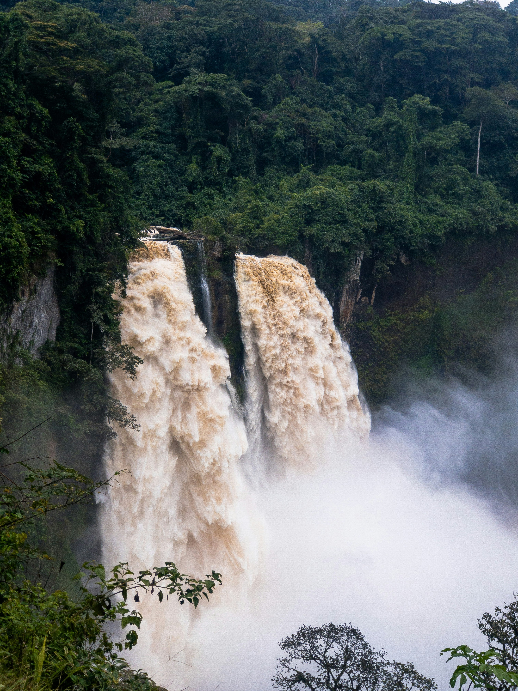

ZANZIBAR

CAMEROON

GERMANY

CROATIA

Embarking on a visual odyssey through the serene and majestic realm of national parks, we are met with a treasure trove of stunning photographs that unveil nature's grandeur in all its glory. Each snapshot encapsulates the essence of these breathtaking landscapes, inviting us to immerse ourselves in the sheer beauty and wonder that they exude. From the ethereal mist of cascading waterfalls to the vibrant hues of lush foliage dancing under the sun's warm embrace, these photos kindle a sense of awe and reverence for the natural world. With every frame captured, they whisper tales of endless horizons and untamed beauty that beg to be explored. Let these photographic journeys serve as a poignant reminder to cherish and preserve the remarkable landscapes that grace our planet, for they are a testament to the unrivaled majesty of Mother Nature..